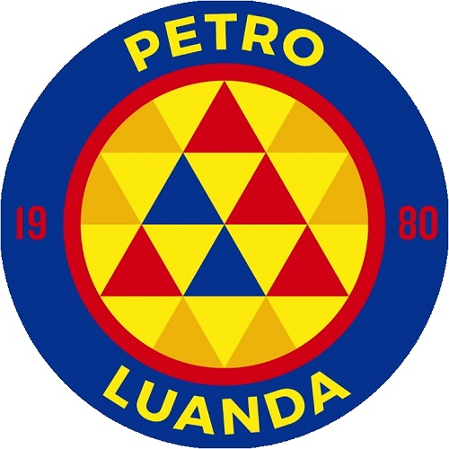
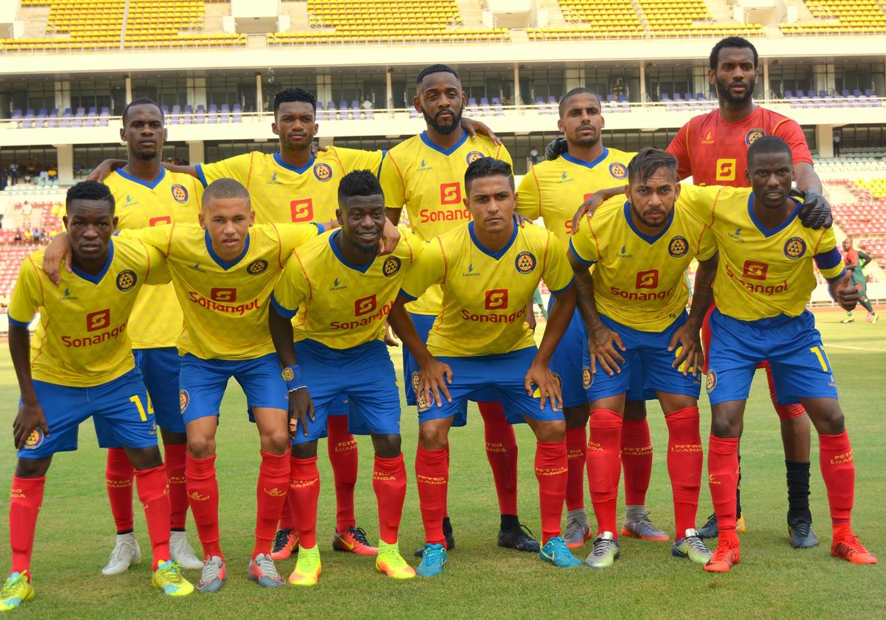

O Atlético Petróleos de Luanda (conhecido por Petro Atlético ou Petro Luanda e cujo acrônimo é APL) é um clube angolano de futebol sediado na cidade de Luanda. Fundado em 14 de janeiro de 1980 por Hermínio Escôrcio, Couto Cabral e Telmo Guerreiro, tem como suas cores tradicionais o azul, amarelo e o vermelho. Contudo, o clube teve como primeiro nome Athletics Petroleus Luanda . Seu símbolo e alcunha mais popular é uma torre de uma plataforma de petróleo, o Atlético é um dos maiores e mais populares clubes de futebol da Angola.
Embora tenha atuado em outras modalidades esportivas ao longo dos anos, seu reconhecimento e suas principais conquistas foram alcançados no futebol. O clube é o maior campeão da Angola, ostenta 32 troféus sendo, além de ser o maior vencedor do Derby Angolano, com uma grande vantagem contra seu rival, o Primeiro de Agosto. A nível nacional, foi campeão Girabola 15 vezes, e conquistou outros títulos nacionais oficiais: a campeão da Taça de Angola 11 vezes e campeão da SuperTaça de Angola 6 vezes.
Na esfera internacional, possui apenas participações nas principais competições do continente: 6 aparições na Taça das Confederações da CAF e 8 aparições na maior competição do continente, a Liga dos Campeões da CAF. Um outro grande feito do Atlético é o de ser, junto ao seu rival Primeiro de Agosto, os únicos clubes que chegaram a semifinais da principal competições de clubes do continente, sendo um eliminado pelo Mamelodi Sundowns da África do Sul na edição de 2001.
Quatro jogadores do Petro Atlético representaram Angola na sua primeira participação do Copa do Mundo em 2006: Antônio Lebo Lebo, Lamá, Zé Kalanga, Luís Delgado e Agloy. Um dos seus principais treinadores foi o brasileiro Antônio Clemente.
| Guardaredes | Defesas | Médios | Avançados |
|---|---|---|---|
| Dominique, Élber, Gerson, Vicente | Musah, Matuwila, Wilson, Vidinho, Kelson, Danilson, Mindinho, Diógenes João, Messias, Tó Carneiro, Eddie Afonso, Pedro Francisco | Ito, Joaquim Adão, Dos Santos, Além, Dany, Manguxi, Job, Megue, Lisandro, Nelinho, Maya | Picas, Yano, Isaac Mensah, Tony, Figueira, Tiago Azulão |
De modalidades esportivas importantes ao longo da história atleticana, destacam-se o handebol, onde o clube conquistou dois títulos do Campeonato Nacional, além de títulos no Basquete o clube também teve muitos dos jogadores convocados para a seleção nos Jogos Olímpicos de Verão de 2008, Hóquei em patins e vôlei.